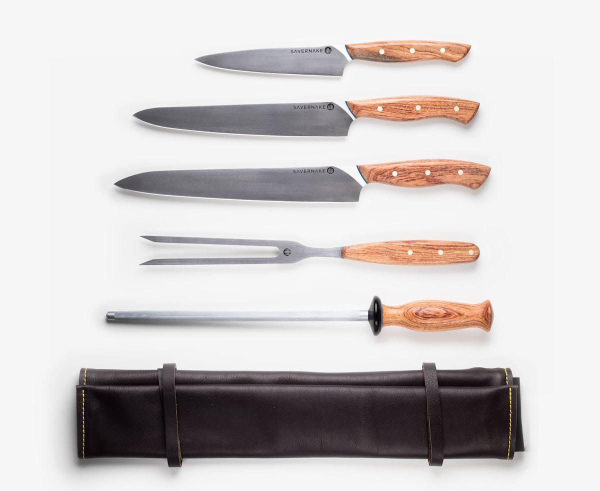

The Right Blade Changes Everything.
Specialty kitchen knives selected for precision, balance, craftsmanship, and everyday culinary performance. Designed for the hands that prepare food with purpose.
Specialty Culinary Collections
Each series is developed around specific cutting geometries, steel temperaments, and ergonomic grip profiles.


Signature Culinary Blades

Artisan 8" Chef Knife
The quintessential kitchen cornerstone. Balanced distal taper for effortless push-cuts, rock-chopping, and mincing.

Kanso Santoku 165mm
Three culinary virtues: meat, fish, and produce. Flatter belly profile tailored for clean downward tap-chopping.

Atelier Petty Knife
Agile tip geometry for paring, trimming silverskin, scoring citrus, and intricate hand-held knife work.

Heritage Bread Knife
Individually ground wave serrations glide through crusty rustic sourdough loaves without crushing delicate crumb.
Forge Prep Utility
Bridging the gap between chef knife and paring knife. Ideal for shallots, cheeses, sandwich prep, and fruits.

Professional Nakiri
Straight dual-bevel vegetable cleaver. Makes full board contact without accordioning julienned vegetables.
Why Specialty Cutlery Matters
A kitchen knife is not an inert slab of metal—it is an engineered wedge governed by metallurgy, apex geometry, and kinetic balance.
Steel & Heat Treat
Steel chemistry determines how long an edge stays keen versus how easily it hones. High-carbon stainless cores (VG10, SG2) provide surgical sharpness with stain protection.
Blade Geometry
Sharpness begins behind the edge. A gradual distal taper and thin convex grind allows the knife to part dense root vegetables without wedging or splitting them.
Kinetic Balance
The balance point sits directly in front of the bolster at the pinch grip. This centers the knife's mass beneath the chef's index finger, eliminating wrist fatigue.
Edge Angle & Apex
Sharpened at an acute 15° per side on rotating water stones. This produces a micro-serrated apex capable of cleanly parting ripe tomato skins without bruising.
Made for the Hands That Cook.
Each STEEL & GRAIN knife undergoes a methodical five-stage manufacturing and inspection protocol before arriving on your prep block.
Precision Forging & Cryogenic Tempering
High-alloy steel billets are precision heat-treated and liquid-nitrogen quenched to refine the crystalline grain structure, achieving Rockwell 60–62 hardness without brittleness.

Water-Cooled Convex Grinding
The primary bevel is shaped on flood-cooled ceramic wheels. This prevents friction temper loss while establishing a continuous convex taper that promotes ingredient release.

Handle Shaping & Ergonomic Bedding
Dense hardwoods—American Walnut, Teak, and Stabilized Ebony—are pinned or traditionally friction-fit to full and partial tanges, then hand-sanded flush to avoid seam voids.

Progressive Whetstone Honing
Blades pass through sequential Japanese water stones from #1,000 grit shaping to #6,000 grit mirror polish, finished on horsehide strops charged with diamond paste.

Optical Apex & Balance Inspection
Every single knife is visually verified under 40x magnification for spine straightness, burr-free bevel consistency, and tested on culinary paper and tension media.

A Great Knife Deserves a Proper Edge.
High-speed motorized dry grinding burns the temper out of fine cutlery steel. Our in-house workshop restores kitchen blades exclusively on cold Japanese water stones, maintaining original bevel geometry.
Intake & Apex Assessment
Microscopic inspection for chips, edge rolling, tip deformation, and heel alignment.
Progressive Water-Stone Sharpening
Restoring primary cutting facets across graded Japanese water whetstones (400 to 6,000 grit).
Micro-Bevel Strop & Return Packaging
Cleaned, oiled with food-grade camellia oil, and returned in protective blade sheaths.
The Foundations of Knife Care
Respect the steel and it will serve your kitchen for decades. The three fundamental rules of culinary knife ownership.
Hand Washing
Never put fine cutlery in a dishwasher. The harsh alkaline detergents, tumbling motion, and prolonged dampness strip handle oils and pit delicate edge bevels. Wash with warm water, mild soap, and towel-dry.
Washing GuideProper Cutting Surfaces
Glass, marble, ceramic, and bamboo dull acute edges rapidly. Use end-grain hardwood boards (Walnut, Larch, Maple) or food-grade soft synthetic rubber boards that yield gently to the knife blade.
Board SelectionSafe Storage & Guarding
Never toss sharp knives loose into a utensil drawer where metal-on-metal collision damages the apex. Store on wood-faced magnetic strips, in slotted wooden blocks, or inside felt-lined wooden sayas.
Storage GuideCutting Boards & Accessories

Walnut Butcher Block

Walnut Magnetic Rack

Ceramic Honing Steel

Waxed Canvas Knife Roll
In the Kitchen with STEEL & GRAIN
Real feedback from passionate home cooks, culinary instructors, and prep artisans.
"The balance on the 8" Artisan Chef Knife is uncanny. The pinch point feels organic, and it holds a toothy 15° bevel through crates of winter squash and herbs without rolling."
"I was nervous about sending my carbon-clad petty knife through mail-in sharpening, but the turnaround was four days and the return bevel was sharper than when it came out of the box."
"The walnut magnetic rack and end-grain board are furniture-grade woodwork. It transformed my prep station into something that feels deeply intentional."
Find the Knife That Belongs in Your Kitchen.
Whether you are preparing nightly family meals or refining complex culinary techniques, our cutlery specialists are here to guide your steel selection.